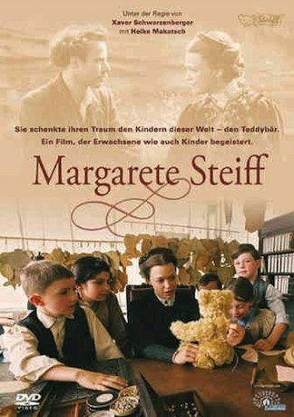

#9172 Margarete Steiff
 
 IMDB-Wertung: 7.0 / 10
IMDB-Wertung: 7.0 / 10  Metascore: 0
Metascore: 0 
"Margarete Steiff" ist die Geschichte eines kleinen bezaubernden Mädchens, dessen Glück durch die Folgen einer Kinderlähmung jäh zerstört wird, das sich aber mit bewundernswerter Willensstärke und Witz ihrem traurigen Schicksal widersetzt und nicht nur sein eigenes Leben meistert, sondern darüber hinaus auch Millionen von Menschen bis heute begeistert. Schon als junge Frau wurde sie allen Widerständen zum Trotz zum größten und wichtigsten Arbeitgeber in ihrer Region und hat mit visionären Ideen und der Erfindung des Teddybärs ein Unternehmen geschaffen, das heute, über 125 Jahre danach, weltweit bekannt ist.
Jahr: 2005
Dauer: 88 Minuten
FSK: 0
Land: Deutschland Studio: MC-OneTonspuren:
Untertitel:
Auflösung: 720p (1280x720) Größe: 2293 MB
Genre: Drama, Biographie
Regisseur: Xaver Schwarzenberger
Drehbuch: Danny Beaton
Soundtrack: Hans-Jürgen Buchner
Darsteller:
 Heike Makatsch als Margarete Steiff
Heike Makatsch als Margarete Steiff- Hary Prinz als Julius
- Bernadette Heerwagen als Charlotte
 Herbert Knaup als Vater
Herbert Knaup als Vater- Christian Koerner als Pfarrer
 Eva Löbau als Pauline
Eva Löbau als Pauline- Andrey Senko als Sautergehilfe
- Felix Eitner als Fritz Steiff
- Donald Arthur als Amerikaner Hollow
- Corinna Beilharz als Sieglinde, Näherin
- Sigrid Burkholder als Anna
- Niklas Ehrensperger als Fritz (7 years old)
- Gerhard Ernst als Grosshändler Messe
- Hubertus Gertzen als Bankdirektor
- Ferdinand Grözinger als Lieferant
- Elke Hagen als Moderne dame
- Michelle Ilibasic als Charlotte - 10
- Jan Jericho als Hans
- Frieder Klein als Hans - 11
- Karl Knaup als Arzt
- Harald Krassnitzer als Dr. Werner
- Max Lau als Richard - 9
- Lilia Lehner als Marie
- Annika Luksch als Margarete (10 years old)
- Patrizia Moresco als Frau Bankdirektor
- Katrin Reisinger als Frau Werner
- Stephan Richter als Assessor
- Heinrich Schmieder als Lehrer
- Kathrin Schwinghammer als Pauline - 12
- Ronald Seboth als Einkäufer Messe
- Katharina Seeberger als Marie - 11
- Matthias Franz Stein als Dolmetscher
- Gisela Straehle als Adelheid, Näherin
- Bernd Tauber als Sauter
- Suzanne von Borsody als Mutter
Datei: X:\2005(G-M)\Margarete Steiff (2005, FSK0, 1280x720).mkv seit 19.07.2018
Festplatte: HD 2005(G-Z)-2006(A-Z)
 Es gibt insgesamt 46 Filme in der Gruppe '2005(G-M)'
Es gibt insgesamt 46 Filme in der Gruppe '2005(G-M)'